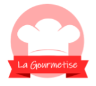
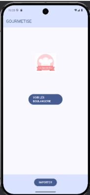
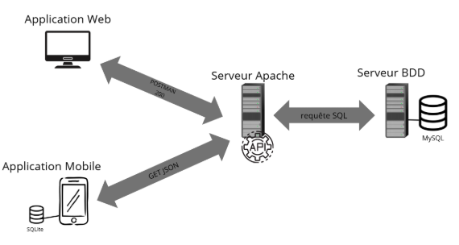
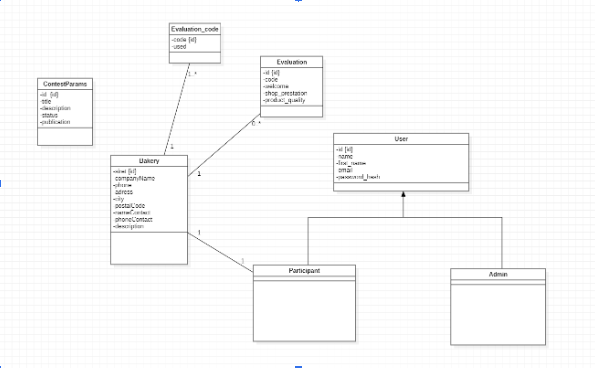

Projet scolaire
Gourmetise est un projet web et mobile conçu pour répondre à un besoin précis. Cette page permet de présenter son objectif, ses fonctionnalités, les technologies utilisées ainsi que plusieurs aperçus visuels.

Type
Projet scolaire
Période
2025-2026
Statut
En Cours
Technologie principale
VueJS / Kotlin
Gourmetise est un projet scolaire visant à concevoir une application web et mobile permettant l’organisation et la gestion de concours de boulangerie. L’application web permet aux boulangeries de s’inscrire afin de participer aux concours, tandis que l’application mobile permet aux juges d’évaluer les établissements selon plusieurs critères. L’objectif est de centraliser les inscriptions, de collecter les notes et d’établir un classement final des meilleures boulangeries.
Interface web permettant aux boulangeries de s’inscrire et d’être ajoutées au système.
Synchronisation des boulangeries inscrites vers l’application mobile via une API.
Les juges peuvent attribuer des notes selon différents critères directement depuis l’application mobile.
Récupération des notes via l’API afin d’établir un classement des meilleures boulangeries.
Quelques aperçus visuels de l’interface et des fonctionnalités

Interface mobile

Schéma d'architecture

Diagramme de classe application web
Ce projet m’a permis de travailler sur une architecture complète combinant une application web et une application mobile. J’ai notamment développé mes compétences en Vue.js ainsi qu’en développement mobile avec Kotlin, tout en découvrant le fonctionnement des API et les échanges de données entre plusieurs plateformes. La mise en place de l’API a représenté une difficulté importante au début, mais m’a permis de mieux comprendre les communications entre applications et d’améliorer mon organisation dans un projet en équipe. Ce projet a été une expérience très enrichissante, tant sur le plan technique que sur le travail collaboratif.